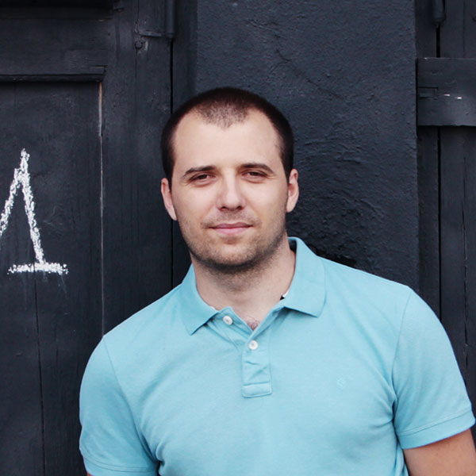

Джама родился и вырос в Душанбе. В 1997 году он поступил в университет на факультет
авиа-космической техники в Анкаре (Турция). В период с 2007 по 2011 год он работал
арт-директором у себя на родине в студии Ustodesign и параллельно рисовал иллюстрации
и концепт-арт для разных клиентов по всему миру. С 2012 года Джама работает
концепт-художником и матте паинтером в студии MPC в Лондоне.
Андрей родился в 1968 году на юге России в городе Апшеронске.
После окончания школы он переехал в Москву для обучения в Лесотехническом
Институте, мам же он нашел свой путь в индустрию рисованной анимации.
Как художник-постановщик по персонажам Андрей работал на многих анимационных фильмах,
включая "Князь Владимир", "Ролли и Эльф".
В 2008 году Андрей переехал жить и работать в Великобританию, где открыл для себя индустрию кино.
Он работал над многими известными фильмами, включая «Wrath of the Titans», «X-Men First Class»,
«Wolfman», «Harry Potter and the Deathly Hallows» и многими другими.
В настоящее время Андрей работает как фрилансер.

Макс занимается дизайном персонажей для рекламы и анимационных проектов,
а так же иллюстрацией для журналов и книг. В 2009 году начал увлекаться
цифровой живописью. С 2010 года работает на фрилансе. В число его клиентов
входят: Wall Street Journal, National Geographic, Mercedes, Volkswagen, Skoda,
Penguin Books и другие. Является победителем конкурса одного из самых известных
иллюстраторских агентств Richard Solomon 2012.

Иван — известный художник с оригинальным и запоминающимся стилем,
каждая его работа пропитана неповторимой атмосферой и настроением.
Иван начал рисовать в 2003 году.
Работал в таких студиях как Nival, Dat, Vogster, Ice pick Lodge.
Его иллюстрации можно найти в журналах Cноб, Mans Health, Проспорт, Tne New Republic.